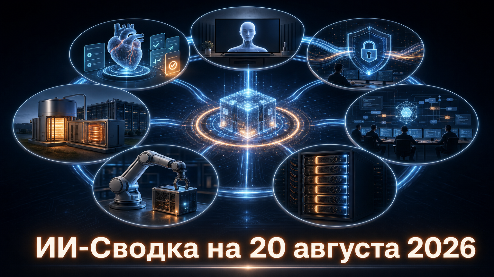

Потребительские ИИ-сервисы продолжают встраиваться в привычные экраны и учебные сценарии: Google расширяет функции Gemini и Поиска, а Amazon убирает подписочный барьер для Alexa+ на Fire TV. Параллельно рынок смещается к операционным вопросам — приватности корпоративных данных, энергоснабжению дата-центров, управлению агентами ИИ и локальному запуску роботизированных моделей.
В российской части заметен практический поиск альтернатив дефицитным ускорителям: MWS AI и Rubytech проверили запуск отечественных LLM на комплексе с китайскими GPU. Это пока не массовый продукт, но важный сигнал о диверсификации инфраструктуры.
Google представила набор функций для студентов в Gemini и Google Search. По данным TechCrunch, в Поиске появятся интерактивные визуализации и 3D-симуляции, тематические квизы и учебные документы по загруженным файлам. Gemini также получит учебный центр и возможность проводить многошаговое исследование в фоновом режиме с последующим обсуждением результата через Gemini Live.
Это расширяет роль поискового сервиса от выдачи ссылок к сопровождению учебной задачи — с материалами, проверкой знаний и диалогом. При этом параметры доступности, регионы, тарифы и сроки запуска отдельных функций в сообщении раскрыты не полностью, поэтому масштаб фактического развёртывания ещё предстоит оценить.
Amazon объявила, что Alexa+ будет бесплатно разворачиваться на совместимых устройствах Fire TV в США, в том числе для пользователей без подписки Prime. Как сообщает TechCrunch, ассистент добавляет разговорный поиск контента, рекомендации и управление устройствами умного дома.
Решение убирает барьер подписки для ИИ-помощника на телевизионной платформе с большой установленной базой. Однако публикация не называет число поддерживаемых устройств и точный график развёртывания; анонс относится только к американскому рынку.
OpenAI начала ограниченный preview Private Safety Processing — системы, которая должна выявлять признаки злоупотреблений по нескольким сессиям, не сохраняя данные клиента. По информации TechCrunch, при срабатывании система передаёт OpenAI лишь узкий сигнал о заранее определённой подозрительной категории, а решение о дальнейшей передаче данных остаётся за клиентом.
Для компаний с чувствительными данными это попытка совместить требования zero data retention с необходимостью отслеживать долгие и распределённые во времени сценарии злоупотреблений. Пока речь идёт о выборочном preview: условия доступности, технические гарантии и независимая проверка приватности не раскрыты.
TerraPower, по данным TechCrunch, намерена объявить первый проект для дата-центра в 2026 году, а начать строительство — в 2027-м. В основе предполагается реактор Natrium мощностью 345 МВт в связке с накоплением тепла в расплавленном натрии: запасённое тепло можно использовать для покрытия пикового спроса.
Для ИИ-дата-центров это важная инженерная идея: их нагрузка может быстро меняться, а традиционная атомная генерация обычно рассчитана на более ровный профиль работы. Проект остаётся перспективным: заказчик, площадка, коммерческие условия и окончательное инвестиционное решение не названы, а ключевые детали опубликованы со ссылкой на Bloomberg.
Warp запустила Warp Factories — платформу для развёртывания и эксплуатации агентных процессов разработки. Как пишет TechCrunch, система позволяет выбирать модели и обвязку, поддерживает Codex и Claude Code, интегрируется с Jira, Linear, Slack и Teams, а также отслеживает работу агентов и расход токенов.
Рынок ИИ-кодинга движется от личного помощника в редакторе к управляемой «фабрике» задач: компаниям нужны интеграции с рабочими процессами, оценка результатов и контроль затрат. Заявленные удобство и эффект пока основаны на позиционировании Warp — данных о независимой оценке качества или масштабном внедрении в публикации нет.
NVIDIA сообщила о Cosmos 3 Edge — компактной модели для роботизированных манипуляций, рассчитанной на работу непосредственно на Jetson AGX Thor, без обращения к дата-центровому GPU. В техническом блоге NVIDIA модель описана как 4B omni-model с 2B reasoner на базе Nemotron; компания также опубликовала checkpoint политики, код и рецепт постобучения.
Это переводит подход world model из крупных централизованных систем в более прикладной on-device контур, где важны задержка и автономность робота. NVIDIA заявляет около 1,53 секунды на генерацию блока действий и 22,9% успеха в собственной закрыто-контурной оценке RoboLab, однако эти показатели получены в конфигурации компании и не являются независимым сравнением с альтернативными роботизированными политиками.
MWS AI и Rubytech провели испытания программно-аппаратного комплекса с восемью GPU китайского производства для запуска российских LLM. По данным «Ведомостей», представитель Rubytech подтвердил тесты, а компания рассчитывает вывести такие ПАКи на коммерческий рынок в 2027 году.
Сюжет важен как практический шаг к диверсификации поставок ускорителей и снижению зависимости от Nvidia в российской ИИ-инфраструктуре. Пока это не свидетельство массового внедрения: технические характеристики, производительность, используемый поставщик GPU и экономика решения не раскрыты, а коммерческий запуск остаётся планом на следующий год.